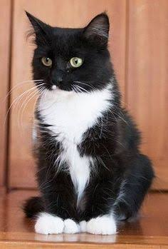

My favorite pet was a cat I named Ally
Hey There, I'm Ally !

Isn't Ally Adorable ?
I was give Ally when he was only 1 month, and He became my bestfriend since then
Well us you know!Owning a pet increases human concerns around loneliness, so it's actually good for you and your health. When we think about loneliness, we need attachent figures and pets meet that need. Because You don't have to worry about confidentiality or judgement. It just is what it is.